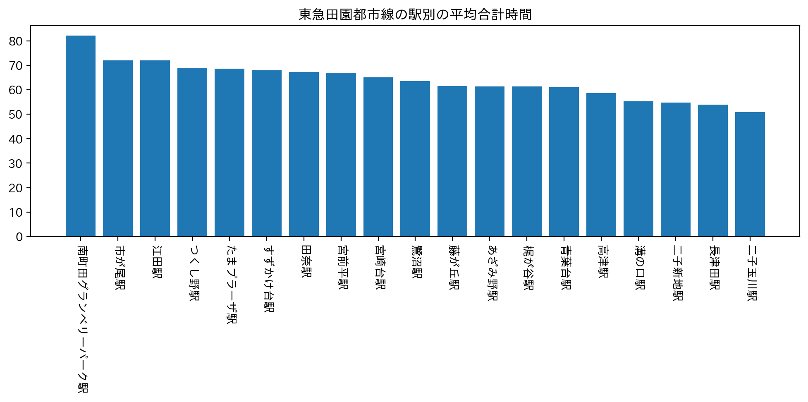
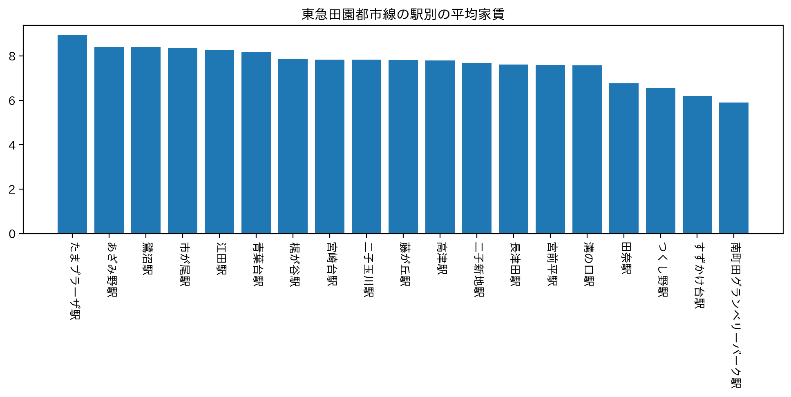

分析
班での話し合いで
私たちの班では、田舎からやってきた女子大学生になる人たちに向けて
そんなに都会のようにうるさくないような落ち着いている町、駅を紹介できたらいいのではないかと考えました。
また、30分～40分ぐらいでキャンパスに着けるようなところがベストだと考えました。
自分が調べた路線
僕が調べたのは東急田園都市線です。
下のグラフが僕が今回調べた内容になります。


合計時間のグラフを見ていただくとわかるようにほとんどの駅の平均合計時間が６０分を超えてしまった。
30分～40分というのは少しずれてしまうが、田園都市線沿いには多くの大学があり暮らしやすいという点ではとてもいいのではないか。
また、平均家賃のグラフを見てもらうと、あまり高くはない。
班の話し合いの時に女性だから一階より高いところが望ましいという意見から平均階数というのも調べた。
あまりにも築年数が経っているものも心配ということから築年数と家賃の関係性を調べたが、家賃が7～8万円で築年数が24～26年程度のところに集まっていた。
まとめ
平均合計時間を大事にしつつ、階数と家賃を見るとこの田園都市線でおすすめの駅は「二子玉川」と「二子新地」